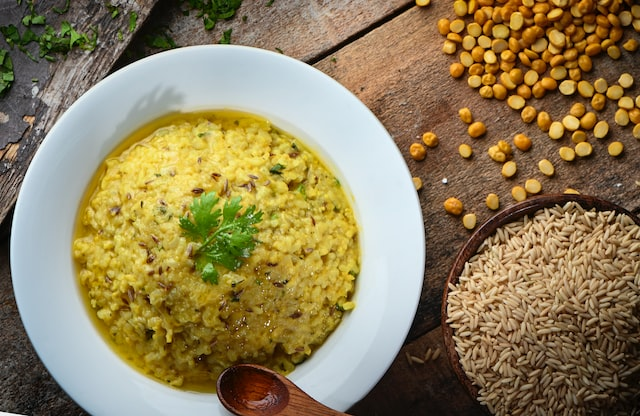

KHICHDI

Description
Khichdi is a dish in South Asian cuisine made of rice and moong lentils. Like every nation, India too has its own comfort foods, khichdi is considered one of that.
It's a comforting, nutritious and filling dish that is made regularly in Indian homes. It provides all the necessary nurtrients in one meal. It is often eaten along with poppadoms, egg omelette, and Imli ka khatta.
Ingredients
- 1 and 1/2 cups basmati rice
- 1/2 cup red lentils or masoor dal/li>
- 1 medium onion(sliced)
- 3 tbsp oil or ghee
- 4-5 curry leaves
- 2 tbsp ginger-garlic paste
- 1/4 tsp tumeric powder
- salt to taste
- 4 slit green chillies
- 1 bay leaf, 4-5 cloves, 1 star anise, 3-4 green cardomom pods, 1 tsp caraway seeds(shah-zeera), 3 inch cinnamon stick
Steps
- Wash the rice and lentils, keep them aside
- In a vessel, on medium-low heat add oil, caraway seeds, bay leaf, cloves, cardomom, cinnamon, star anise
- After 10 seconds, add the onions and cook till transparent and slightly brown, then add the ginger-garlic paste and cook for 15 seconds
- Add in the curry leaves, green-chillies, tumeric powder and add 5 glasses of water, close the lid and allow it to boil.
- while it is boiling add the rice and the lentils and cook until all the water is absorbed
- while cooking, when there is little water left at last reduce the flame to low heat for a while before it is ready to serve
- Serve hot!